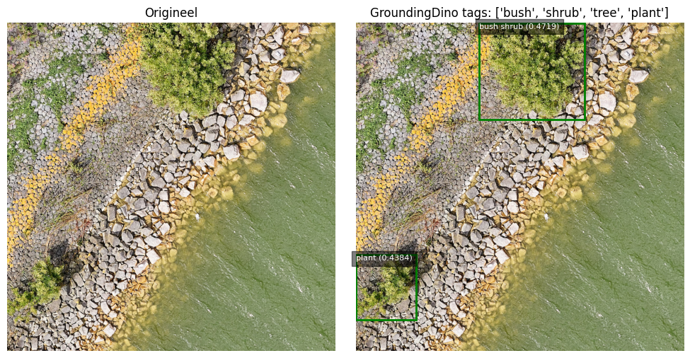

Deze notebook bevat een voorbeeld van opschotdetectie. Opschot zien we als ongewenste, houtachtige begroeiing op een steenbekleding van een waterkering. De methode om opschot te detecteren is in dit voorbeeld gebaseerd op zero-shot inference met de foundation models GroundingDino en SegmentAnything.
Om opschot te detecteren, moeten we de locatie van opschot bepalen en vervolgens uitknippen. De locatie bepalen we met behulp van GroundingDino, waarna we de precieze locatie uitknippen met SegmentAnything. Om dit te doen moeten we eerst de twee modellen inladen.
Code
# Load Grounding Dino Modeldino_model = groundingdino.util.inference.load_model( cfg.GROUNDING_DINO_CONFIG_PATH, cfg.GROUNDING_DINO_CHECKPOINT_PATH, device="cuda:1",)# Load Segment Anything Model (SAM)if cfg.USE_SAM_HQ:from segment_anything_hq import SamPredictor as SamPredictor_hqfrom segment_anything_hq import sam_model_registry as sam_model_registry_hq sam = sam_model_registry_hq[cfg.SAM_HQ_ENCODER_VERSION]( checkpoint=cfg.SAM_HQ_CHECKPOINT_PATH ).to(device="cuda:1") sam_predictor = SamPredictor_hq(sam)else:from segment_anything import SamPredictor, sam_model_registry sam = sam_model_registry[cfg.SAM_ENCODER_VERSION]( checkpoint=cfg.SAM_CHECKPOINT_PATH ).to(device="cuda:1") sam_predictor = SamPredictor(sam)
/opt/tljh/user/envs/opschotdetectie2/lib/python3.11/site-packages/torch/functional.py:507: UserWarning: torch.meshgrid: in an upcoming release, it will be required to pass the indexing argument. (Triggered internally at /opt/conda/conda-bld/pytorch_1708025842427/work/aten/src/ATen/native/TensorShape.cpp:3549.)
return _VF.meshgrid(tensors, **kwargs) # type: ignore[attr-defined]
final text_encoder_type: bert-base-uncased
Trefwoorden voor GroundingDino om opschot te detecteren
GroundingDino detecteert objecten op basis van een of meerdere trefwoorden (‘tags’). In dit voorbeeld geven we de trefwoorden ‘bush’, ‘shrub’, ‘tree’ en ‘plant’ mee aan GroundingDino om opschot te detecteren. GroundingDino produceert op basis van deze trefwoorden bounding boxes in de figuur waar deze trefwoorden worden aangetroffen. Op basis van Non-maximum-Supression worden overlappende bounding boxes tot 1 box samengevoegd.
Code
tag_list = ["bush", "shrub", "tree", "plant"]tags =". ".join(tag_list)def get_grounding_output( model: torch.nn.Module, image: torch.Tensor, caption: str, box_threshold: float, text_threshold: float, device: str="cpu",) -> Tuple[torch.Tensor, torch.Tensor, List[str]]:""" Process an image and caption through a model to generate grounded outputs, including filtered bounding boxes and corresponding text phrases. Parameters: - model (torch.nn.Module): The model to process the input data. - image (torch.Tensor): The image tensor. - caption (str): The caption string related to the image. - box_threshold (float): The threshold value to filter the bounding boxes based on confidence scores. - text_threshold (float): The threshold value to filter the text based on logits. - device (str, optional): The device type, 'cpu' or 'cuda', where the computation will take place. Defaults to 'cpu'. Returns: - tuple: - filtered_boxes (torch.Tensor): The filtered bounding boxes. - scores (torch.Tensor): The confidence scores of the phrases. - pred_phrases (list of str): The predicted phrases associated with the bounding boxes. """# Prepare caption caption = caption.lower().strip()ifnot caption.endswith("."): caption +="."# Move model and image to the specified device model = model.to(device) image = image.to(device)# Generate predictionstry:with torch.no_grad(): outputs = model( image.unsqueeze(0), captions=[caption] ) # Ensure image is 4D logits = outputs["pred_logits"].sigmoid()[0] # (num_queries, num_classes) boxes = outputs["pred_boxes"][0] # (num_queries, 4)# Filter outputs based on thresholds max_logits = logits.max(dim=1)[0] filt_mask = max_logits > box_threshold logits_filt = logits[filt_mask] boxes_filt = boxes[filt_mask]# Prepare phrases and scores tokenizer = model.tokenizer tokenized = tokenizer(caption) pred_phrases, scores = [], []for logit, box inzip(logits_filt, boxes_filt): pred_phrase = groundingdino.util.utils.get_phrases_from_posmap( logit > text_threshold, tokenized, tokenizer ) pred_phrases.append(f"{pred_phrase} ({logit.max().item():.4f})") scores.append(logit.max().item())return boxes_filt, torch.tensor(scores), pred_phrasesexceptExceptionas e:raiseException(f"An error occurred during model prediction: {e}")# Find bounding boxes with grounding dinoboxes_filt, scores, pred_phrases = get_grounding_output( dino_model, image, tags,0.35,0.25, device="cuda:1",)boxes_filt =boxes_filt.cpu()# Resize boxessize = image_pil.sizeH, W = size[1], size[0]for i inrange(boxes_filt.size(0)): boxes_filt[i] = boxes_filt[i] * torch.Tensor([W, H, W, H]) boxes_filt[i][:2] -= boxes_filt[i][2:] /2 boxes_filt[i][2:] += boxes_filt[i][:2]# use NMS to handle overlapped boxesnms_idx = ( torchvision.ops.nms(boxes_filt, scores, 0.5).numpy().tolist())if cfg.DO_IOU_MERGE: boxes_filt_clean = boxes_filt[nms_idx] pred_phrases_clean = [pred_phrases[idx] for idx in nms_idx]print(f"NMS: before {boxes_filt.shape[0]} boxes, after {boxes_filt_clean.shape[0]} boxes")else: boxes_filt_clean = boxes_filt pred_phrases_clean = pred_phrasesdef show_box(box: Iterable[float], ax: matplotlib.axes.Axes, label: str) ->None: x0, y0 = box[0], box[1] w, h = box[2] - x0, box[3] - y0 rect = plt.Rectangle((x0, y0), w, h, edgecolor="green", facecolor="none", lw=2) ax.add_patch(rect) ax.text( x0, y0, label, verticalalignment="top", color="white", fontsize=8, bbox={"facecolor": "black", "alpha": 0.5}, )returnNonefig, axs = plt.subplots(1, 2, figsize=(10, 5), dpi=100, squeeze=False)ax = axs[0, 0]ax.imshow(image_np)ax.set_title("Origineel", wrap=True)ax.axis("off");ax = axs[0, 1]ax.imshow(image_np)for box, label inzip(boxes_filt_clean, pred_phrases_clean): show_box(box.numpy(), ax, label)ax.set_title(f"GroundingDino tags: {tag_list}", wrap=True)ax.axis("off")fig.tight_layout();
/opt/tljh/user/envs/opschotdetectie2/lib/python3.11/site-packages/transformers/modeling_utils.py:962: FutureWarning: The `device` argument is deprecated and will be removed in v5 of Transformers.
warnings.warn(
/opt/tljh/user/envs/opschotdetectie2/lib/python3.11/site-packages/torch/utils/checkpoint.py:460: UserWarning: torch.utils.checkpoint: please pass in use_reentrant=True or use_reentrant=False explicitly. The default value of use_reentrant will be updated to be False in the future. To maintain current behavior, pass use_reentrant=True. It is recommended that you use use_reentrant=False. Refer to docs for more details on the differences between the two variants.
warnings.warn(
/opt/tljh/user/envs/opschotdetectie2/lib/python3.11/site-packages/torch/utils/checkpoint.py:90: UserWarning: None of the inputs have requires_grad=True. Gradients will be None
warnings.warn(
NMS: before 3 boxes, after 2 boxes

Uitknippen van opschot met SegmentAnything
Op basis van de zojuist gedetecteerde objecten, kunnen met SegmentAnything de contouren gedetecteerd worden.
Code
def show_mask( mask: np.ndarray, ax: matplotlib.axes.Axes, random_color: bool=False) ->None:if random_color: color = np.random.rand(3) # Generates three random floats between 0 and 1 color = np.append(color, 0.6) # Add alpha for transparencyelse: color = np.array( [30/255, 144/255, 255/255, 0.6] ) # Deep sky blue with transparency h, w = mask.shape mask_image = mask.reshape(h, w, 1) * color.reshape(1, 1, -1) ax.imshow(mask_image)returnNone# Segment objects with SAMsam_predictor.set_image(image_np)transformed_boxes = sam_predictor.transform.apply_boxes_torch( boxes_filt_clean, image_np.shape[:2]).to("cuda:1")masks, _, _ = sam_predictor.predict_torch( point_coords=None, point_labels=None, boxes=transformed_boxes.to("cuda:1"), multimask_output=False,)for cat_title, mask inzip(pred_phrases_clean, masks): mask = mask.cpu().numpy()# Setup figure and axesfig, axs = plt.subplots(1, 2, figsize=(10, 5), dpi=100, squeeze=False)ax = axs[0, 0]ax.imshow(image_np)ax.set_title("Origineel", wrap=True)ax.axis("off");ax = axs[0, 1]ax.imshow(image_np)for mask in masks: show_mask(mask[0,...].cpu().numpy(), ax, random_color=False)for box, label inzip(boxes_filt_clean, pred_phrases_clean): show_box(box.numpy(), ax, label)ax.set_title(f"GroundingDino + SegmentAnything, tags: {tag_list}", wrap=True)ax.axis("off")fig.tight_layout();